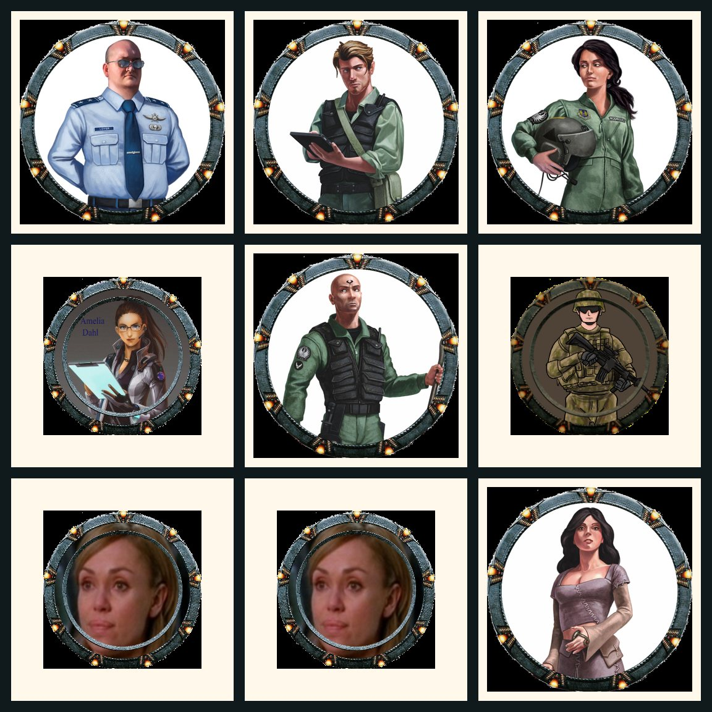
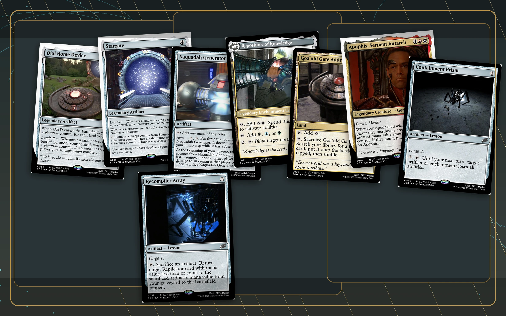
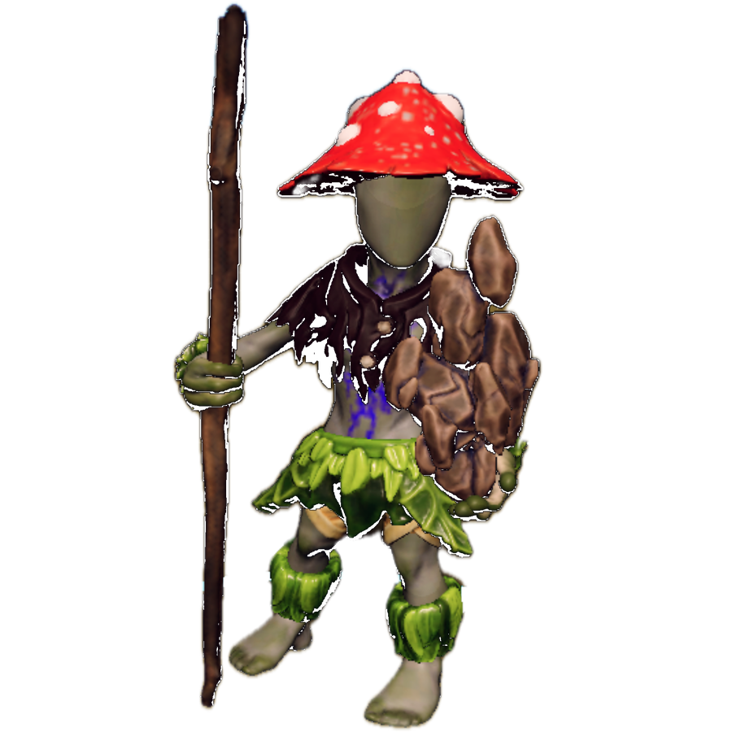

People know how to enter.
Expectations, tone, and first choices land early, so new players can stop bracing and start playing.

I run tabletop games that lower the social friction, make complex worlds playable, and give stores or private groups a host they can trust with the room.

Expectations, tone, and first choices land early, so new players can stop bracing and start playing.
Pacing, safety, rules help, and spotlight sharing stay handled while the story keeps moving.
Choices leave marks: factions react, relationships change, and the next session has memory.
Cards, towers, maps, and visible pressure turn big ideas into table objects players understand fast.
The job is not just lore. It is welcome, pace, clarity, trust, recovery, and payoff. I design the room so people can relax into the story.
Players get enough structure to feel safe, then enough space to surprise the table.
Deep settings become playable through clear factions, visible stakes, and choices people remember.
Custom mechanics do their job quietly: they create pressure, reveal tradeoffs, and keep the scene moving.
Prepped, warm, adaptable, and focused on making the table easy for organizers and players.
A good GM lowers buyer risk. People need to know the event will start cleanly, include newcomers, and leave the group wanting another session.
Beginner nights, organized play, and special events that need a host who can represent the space well.
First-timers and veterans can share the same table without one side feeling lost or slowed down.
One-shots with a strong premise, clean onboarding, and enough texture to feel bigger than a demo.
Each one shows a different kind of fun: long-game consequence, bright table pressure, cinematic mission play, and custom systems players can actually enter.

A long-running fantasy campaign about nobodies becoming dangerous enough for the world to notice. The value is continuity: factions move, consequences echo, and players can still find the thread.
At the table: Deep lore gets turned into choices players can actually use.
Explore the world
A fantasy workplace hazard disguised as a team-building opportunity. The Jenga tower turns risk into a shared physical joke: HR would call it morale. The table knows better.
At the table: The joke lands because the mechanic is visible, physical, and easy to teach.
Explore the one-shot
A mission-driven sci-fi campaign built around briefings, objectives, maps, role support, and episode pacing. It proves a different kind of table craft: fast orientation inside a big premise.
At the table: Players get a clear mission frame, a shared team identity, and concrete tools for the scene.
Explore the missions
A custom sci-fi card world built around factions, missions, and table-tested pressure. The card work shows a different side of GM craft: readable mechanics, faction identity, and balance you can actually play.
At the table: Faction identity and readable cards make custom systems feel playable.
Explore the cardsA strong table gives people something specific to remember: the choice that landed, the scene that surprised them, and the moment they knew they belonged.
Players should leave with one scene they keep replaying, one choice that mattered, and one reason to come back.
A good room lets people try the bold voice, the messy plan, and the sincere character beat.
Players can feel the size of the setting without needing homework before they make a choice.
The table can swerve, joke, and surprise itself without losing pace or emotional payoff.
Mechanics create pressure and texture, then get out of the way when the scene needs air.
These are player words with handle-based attribution. The StartPlaying review link is repeated here for anyone who wants the external signal too.
Kyle makes the world feel like it keeps moving even when our characters are not looking at it. I always felt like my choices mattered and that my character had a real place in the larger story.
Kyle creates the kind of table where people feel safe enough to take creative risks. He pays attention to the room and still keeps the story moving.
Kyle can handle absolute player chaos and still make it feel like part of the story. He keeps the table welcoming no matter how much experience someone has.
In Peril to Profit, every faction and place felt like it had a reason to exist. The world was huge, but I never felt lost.
I have played with Kyle across very different games. There is a huge amount behind the scenes, but at the table it still feels clear and fast.
Kyle puts a lot of invisible work into making custom systems feel smooth at the table. In Stargate, the mechanics supported the cinematic feeling instead of getting in the way.
My character felt like they mattered to the world. That is what kept me excited between sessions.
I've had the chance to play with Kyle as a Dungeon Master/Game Master across three different campaigns, including both D&D 5e and Daggerheart, and I can honestly say he brings something really special to the table.
Kyle is creative, imaginative, and deeply thoughtful in the way he builds worlds and stories. His campaigns are immersive and expansive, but they never feel like they lose sight of the players. He puts a lot of care into getting to know each character, often spending one-on-one time with players to understand what they're hoping to explore, and then finding creative homebrew ways to make those visions come alive.
One of my favorite things about his games is that his homebrews are genuinely unique. They can be funny, heartfelt, surprising, and emotionally resonant, often engaging real-world themes while still feeling fully rooted in high fantasy. His campaigns can be challenging, but in a way that feels satisfying and rewarding rather than punishing.
I also really appreciate the way Kyle approaches safety, accessibility, and community at the table. He is attentive to player comfort, open to feedback, and cares about making the game feel welcoming and collaborative. He creates space for people to participate in ways that work for them, and he helps build a table culture where players feel invested not only in the story, but in each other.
Kyle is also really intentional about making sure players have meaningful character and story moments. He pays attention to everyone at the table and looks for ways to give each character time to shine, whether that means a personal arc, a dramatic choice, a funny moment, or a homebrew feature that helps bring a player's vision to life. It makes the campaigns feel collaborative and personal, rather than like players are just moving through a story that was already written without them.
My favorite world of his is Peril to Profit, a fantasy steampunk, hyper-capitalist corporate satire with a vibe somewhere between Borderlands and Fallout's Vault-Tec. It's hilarious, sharp, weird, imaginative, and full of heart.
Kyle brings a rare mix of humor, emotional depth, creativity, flexibility, and care to his games. I'd absolutely recommend him to anyone looking for a GM who can build a memorable world, support meaningful character arcs, and create a table that feels fun, safe, and genuinely connected.

A few adjacent projects show the same habit from another angle: turning messy play, systems, notes, and worldbuilding into something other people can explore.
Tell me the room, the players, the tone, and what would make the event a win. I will help shape the first session into something clear, welcoming, and worth returning to.